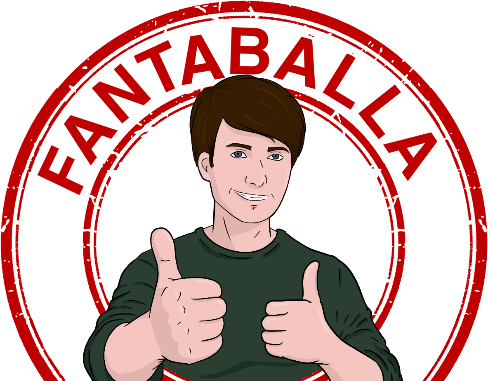

Commenta il mio video
Scrivi o allega la tua rosa completa e il nome della squadra. Sia titolari che riserve.

Fantaballa La tua fantarosa in Serie ALa tua fantarosa in Serie A presenta
Prendo le rose create dagli utenti al fantacalcio, le ricostruisco su FM26, simulo un'intera stagione e pubblico il risultato con il mio verdetto finale.
La tua fantarosa in Serie A · Power ranking
Tutte le rose simulate su FM26, ordinate secondo il verdetto finale.
Prova a modificare ricerca o filtri.
Le squadre selezionate
Apri ogni scheda per scoprire titolari, riserve, modulo, risultati e valutazione.
Il format
Scrivi o allega la tua rosa completa e il nome della squadra. Sia titolari che riserve.
I protagonisti del mio video li pesco casualmente dai commenti. Gli abbonati hanno però precedenza. 1 su 3 per video.
Inserisco la vostra rosa su FM26 e simulo una stagione intera.
Condivido il video coi risultati con il mio verdetto finale, che sarà poi visibile anche su questo sito.
La prossima potrebbe essere la tua